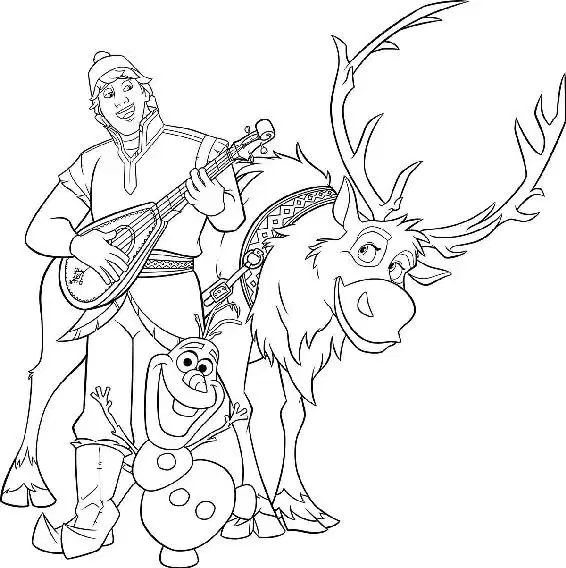

Marshmallow grabbed the unwanted visitors and tossed them down the icy steps. “Go home!” roared the snowman.
But Olaf remained in Marshmallow’s arms, having come apart with all the jostling .“You are a lot stronger than I think you realize,” he told the snow giant.
Marshmallow howled and threw Olaf, one piece at a time, down the mountain.
“Heads up!” Olaf’s head shouted as it soared past Anna and Kristoff.
The head crashed into a snowbank.
“Olaf!” cried Anna, racing over to Olaf’s head. “Watch out for my butt!” he warned.
Anna and Kristoff jumped out of the way just as the rest of Olaf’s body slammed into the snowbank.
Anna picked up a handful of snow and molded it into a ball. Then she flung it at the huge snowman.
“It’s not nice to throw people!” she shouted angrily.
Marshmallow roared — and charged after them! “All right, feisty-pants,” Kristoff said to Anna.
“Now you made him mad!”
“I’ll distract him,” Olaf said. “You guys go!” Olaf’s belly and butt took off in opposite directions.
“No, not you guys!” he yelled to the two body balls, then sighed. “This just got a lot harder.”
Anna and Kristoff slid down the mountain. When they reached the bottom, Marshmallow was already there!
“Look out!” Kristoff called.
They quickly got up and ran through a maze of trees and snowbanks, with Marshmallow close behind them.
“This way!” Anna shouted. She grabbed a stick and knocked the heavy snow off a tree. With the extra weight lifted, the tree snapped upright and knocked Marshmallow back. Anna and Kristoff laughed and ran ahead of the snowman. But Marshmallow was not giving up.
Anna and Kristoff continued to run until they reached the edge of a steep cliff.
“Whoa, stop!” Kristoff yelled.
Anna peered over the edge. “It’s a hundred-foot drop,” she said.
“It’s two hundred,” he countered. Taking a rope, Kristoff tied a loop around Anna’s waist. Then he dug a U shape in the snow.
“What’s that for?” Anna asked.
“I’m digging a snow anchor,” Kristoff told her. “Okay. What if we fall?” Anna said. She looked over the edge again.
“There’s twenty feet of fresh powder down there,” he answered. “It’ll be like landing on a pillow.” He paused, and then added, “Hopefully.”
Anna’s eyes widened.
Kristoff tied off the rope in the snow anchor. “Okay, Anna,” he said. “On three...”
Anna moved closer to the edge.
“One, two... ,” Kristoff counted. Just then, a tree sailed through the air. Marshmallow had thrown it at them!
“Tree!” Anna yelled. She jumped over the cliff, pulling Kristoff with her.
“What? Whoa!” Kristoff hollered as the two plummeted. Seconds later, the rope caught their fall and they were dangling in mid air.
At that moment, Olaf emerged from the trees, a complete mess. His body parts were in the wrong order as he staggered toward the cliff.
“Oh, man, I am out of shape,” he mumbled, winded from the chase. He quickly put himself back together properly. “There we go,” he said. “Hey, Anna! Kristoff! Where’d you guys go?” He searched all around. “We totally lost Marshmallow back there!”
Marshmallow stepped forward and stood behind Olaf.
Olaf peered up and smiled. “Hey, we were just talking about you,” he said. “All good things, all good things,” he quickly added.
The big snowman roared and went for the snow anchor that held Kristoff and Anna. Olaf took action and jumped onto Marshmallow’s leg. “No!” he shouted. Realizing he was no match for the giant, Olaf shrugged. “This is not making much of a difference, is it?”
Marshmallow shook off the little snowman and kicked him over the edge of the cliff. Olaf flew past the dangling Anna and Kristoff.
“Hang in there, guys!” he called.
A tug on the rope told Anna and Kristoff that Marshmallow was pulling them back up to the ledge! They started spinning out of control. Kristoff reached down for Anna and hit his head on the cliff.
“Ugh!” he shouted.
Marshmallow pulled them almost to the top. “Don’t come back!” he bellowed.
“We won’t!” Anna answered. She reached up and cut the rope with a knife. She and Kristoff fell down, down, down... and landed in a deep pile of soft snow.
Suddenly, everything was quiet. “Hey, you were right,” Anna said, sitting up and shaking the snow out of her hair. “Just like a pillow!” She looked over and saw Olaf.
“I can’t feel my legs!” Olaf screamed, panicking as he stared at two feet coming through the snow in front of him. “I can’t feel my legs!”
“That’s because those are my legs,” Kristoff said, sitting up just behind Olaf.
Suddenly, Olaf’s lower body came running over. “Oh, hey,” Olaf said to Kristoff. “Do me a favor and grab my butt.”
Kristoff took Olaf’s chatty head and slammed it onto his body.
“Oh, that feels better,” Olaf said happily.
Sven walked over and sniffed Olaf’s carrot nose. “Hey, Sven!” Olaf greeted the reindeer and then turned toward Anna and Kristoff just before Sven could bite the carrot. “He found us!” He looked back at Sven. “Who’s my cute little reindeer?” he cooed.
Kristoff pulled Olaf away from Sven. “Don’t talk to him like that.”
Then Kristoff went to help Anna. “You okay?” he asked, pulling her out of the snow.
“Whoa! Strong man,” Anna said. “Okay, thank you.” Anna’s and Kristoff’s eyes met. They held the gaze for a long moment and then looked away.
“How’s your head?” Anna asked. She touched the spot where Kristoff had banged his head on the cliff. “Ow!” he shouted. “I mean... it’s fine. I’ve got a thick skull.” Anna giggled.
“I don’t have a skull,” Olaf remarked. “Or bones.” “So now what?” Kristoff asked Anna.
The question sent Anna into a panic. “I don’t know! What am I going to do? Elsa threw me out, I can’t go back to Arendelle with the weather like this, and then there’s your ice business...”
Kristoff felt bad for Anna, but he knew panicking wouldn’t help. He tried to steer her back to their current situation. “Hey, don’t worry about my ice business,” he told her. “Worry about your hair.”
Anna’s hands flew to her head and she tried to smooth down her hair. “What? I just fell off a cliff,” she said. “You should see your hair.”
“No, yours is turning white,” he said, concerned. “White?” Anna cried. She grabbed her long braid just as another section of hair lost its color.
“It’s because she struck you with her powers, isn’t it?” Kristoff asked.
“Does it look bad?”
Kristoff thought for a moment. “No,” he said. Olaf popped up. “You hesitated,” he said.
“No, I didn’t,” Kristoff said. He knew that Anna needed help. And he knew where to go — and who to ask. “Come on.”
“Okay! Where are we going?” Olaf asked. “To see my friends,” Kristoff said.
Anna’s eyebrows rose up. “The love experts?” Olaf was surprised. “Love experts?”
“Yes,” Kristoff answered. “They’ll be able to fix this.”
Anna followed Kristoff and Sven, with Olaf trailing behind. “How can you be so sure?” she asked.
“Because I’ve seen them do it before.”
“I like to consider myself a love expert,” Olaf said sweetly.
